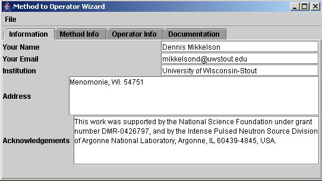
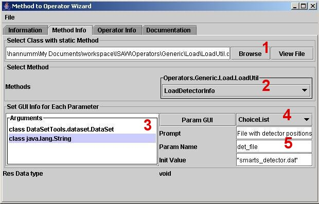
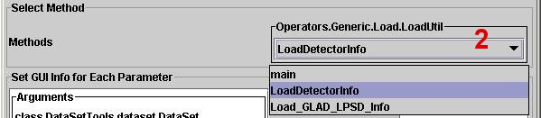
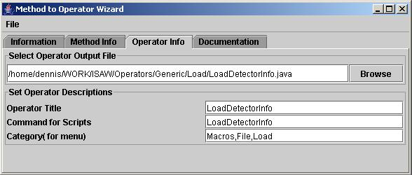
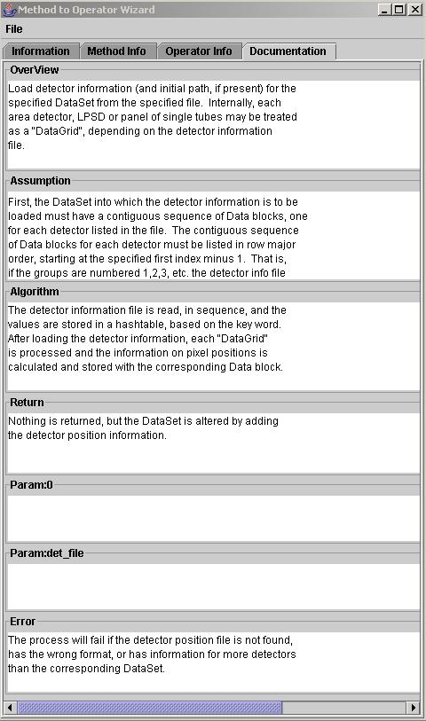

Operator Generator
Java Method to ISAW Operator Wizard
Contents |
The Method to Operator Wizard is
designed to allow users to easily create custom operators from
existing methods. The resulting operators
can be invoked either through the Macros menu or a script
command. Parameter GUI elements are created for each
method argument.
Getting Started:
Launching from a
command line
To launch the Method to Operator Wizard from a command line, type the following.
java devTools.Method2OperatorWizard

The information tab is used to enter data about the operator’s creator. This data will automatically be included as part of the internal documentation for the operator. Information entered in this tab can also be stored in a separate file for use in other operators by choosing Save Contact Info under the File menu.
Your Name – Enter the name that you would like to appear in the operator's internal documentation.
Your Email – Enter the email address that you would like to appear in the operator's internal documentation.
Institution – Enter the name of the institution that you would like to appear in the operator's internal documentation.
Address – Enter the address that you would like to appear in the operator's internal documenation.
Acknowledgements – Enter any acknowledgements that you would like to appear in the operator's internal documentation.

The method info tab
allows users to select the static method that will perform the actual
work of the operator as well as configure the
parameters for that method. In order to use the method info
tab effectively, a specific sequence of actions must be done.
1 First you must select a class with the static
method by clicking Browse.
2 Select the method you would like to
use by clicking on the Methods
drop-down menu.
3 Click on each parameter individually to begin
configuring the GUI
and
the associated information for that parameter.
4 Select the Parameter GUI for the parameter that you
would like to
use
from the
drop-down menu.
5
Fill in each of the Parameter GUI text fields.
Select Class
with Static Method (1) – Press the Browse button to find
the Java class that contains the static method you would like to
use. The selected class must be on the class path. Users
may press
the View File button to view the Java code for the
selected class in a new window if needed.
Select Method (2) – Use the drop-down menu to choose a method to work with.

Set GUI Info for Each Parameter
–
Use the "Set GUI Info for Each Parameter" area to configure the GUI to
be
used in each of
the method’s parameters.
Arguments (3) – The arguments
box lists all of the available parameters for the currently selected
method. Users must select each parameter separately to configure
the corresponding GUI. Data contained in the Parameter GUI fields
will be stored internally and will not be lost unless a new method is
chosen.
Param GUI – Use the Param GUI button to view information about the currently selected parameter GUI.
Drop-Down Menu (4) – This
menu lists all parameter GUIs that can be used for the current
parameter based on its data type.

Select Operator Output File – Press the Browse button to select the file to write the completed operator to.
Note: This does not save the
current session. To save the current session select Save Session under the File menu.
Set Operator Descriptions – Use this area to edit the operator’s properties.
Operator Title – Enter a title for the operator; this title will be used as the operator’s name in all menus.
Command for Scripts – Use this text field to specify the operator name that will be used in scripts.
Category – Use this text field to specify the menu location of the operator. Operators will be placed under the Macros menu. Menu levels are separated by commas. Any additional sub-menus that are specified will be created if they do not already exist.

Overview – Enter a brief description of the operator in the overview text box.
Assumption – Address any
assumptions within the operator. This includes special data set
requirements, positive/negative values, units of measurement, etc.
Algorithm – Enter a brief
desctiption of the algorithm.
Return – Use the return text field to describe the operator’s return values to the user. Be sure to include information about the return type and units of measurement.
Parameter – Use the
parameter text field to describe the meaning of the operator’s
parameters to the user.
Error – Use this text
field to describe any known errors that might be generated by the
operator.
Exceptions will be translated into error messages using information in
the exception.
Load Contact Info – Load your saved contact information into the information tab.
Load Session – Load your saved session information into all of the tabs.
Create Operator – Create the currently defined operator and save it to the file chosen in Select Operator Output File under the operator info tab.
Note: This does not save the current session.
Save Contact Info – Save the data contained in the information tab as a separate file for use in other operators.
Save Session – Save the current session information from all tabs as a separate file for later editing.
Exit – Exit the Method to Operator Wizard.